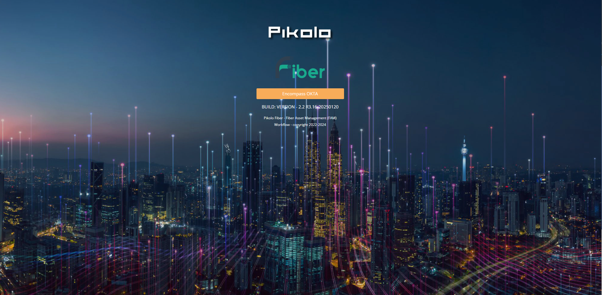
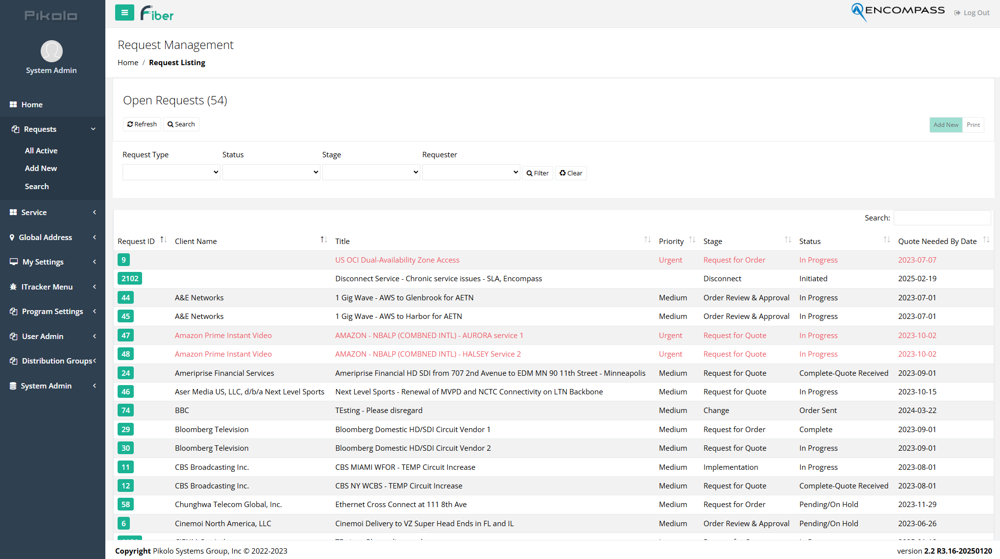
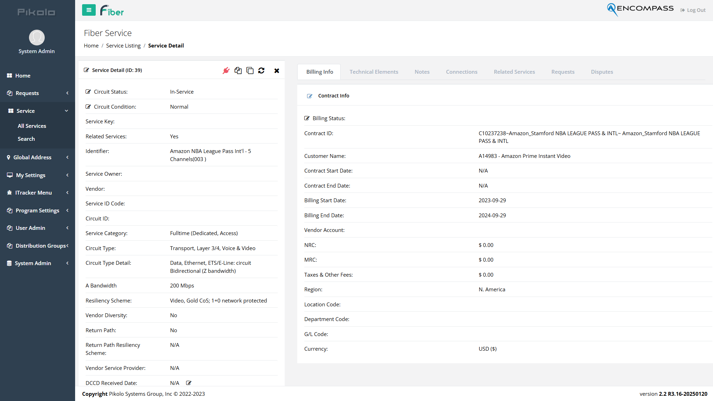
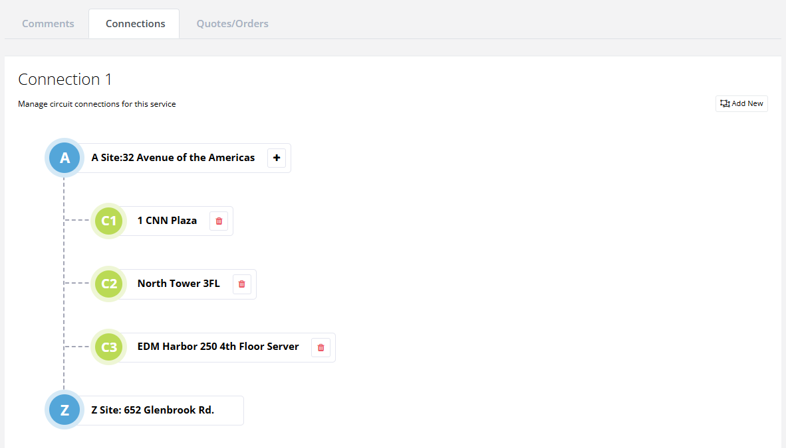
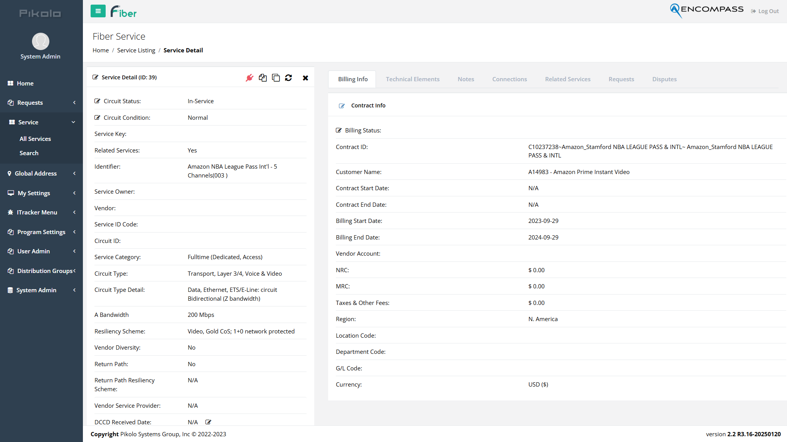
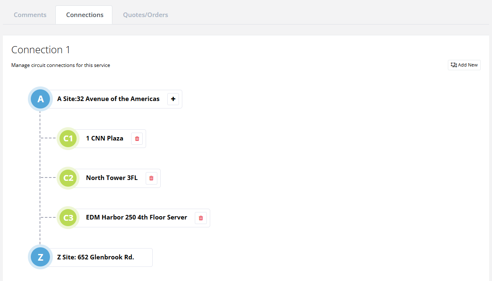

 



SheetGO Automated Gsheets
Description: A fully featured Google Sheets automation tool.
Role: Product Owner/Manager
Technologies: Gsheet, SheetGO, Excel, etc.
Features
- Comprehensive fiber tracking dashboard
- Automated workflow management
- Customizable reporting and analytics
- User roles and permissions
- Responsive design for all devices
Challenges
- Integrating multiple data sources and APIs
- Ensuring data accuracy and consistency
- Designing an intuitive user interface
- Managing project scope and stakeholder expectations
Outcomes
- Improved workflow efficiency by 40%
- Positive feedback from end users
- Successful deployment across multiple teams
Lessons Learned
- Importance of clear communication with stakeholders
- Value of iterative design and user feedback
- Best practices for API integration and data validation